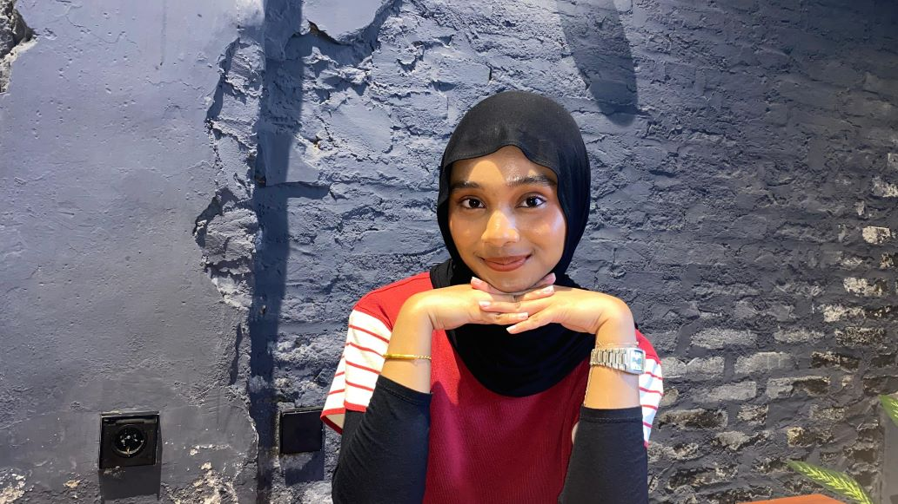
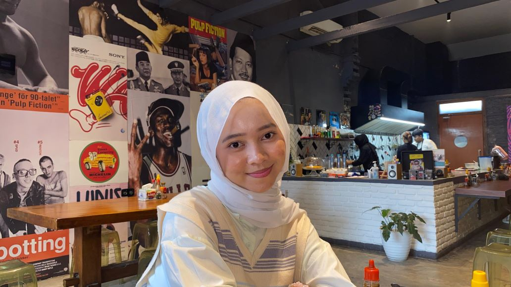
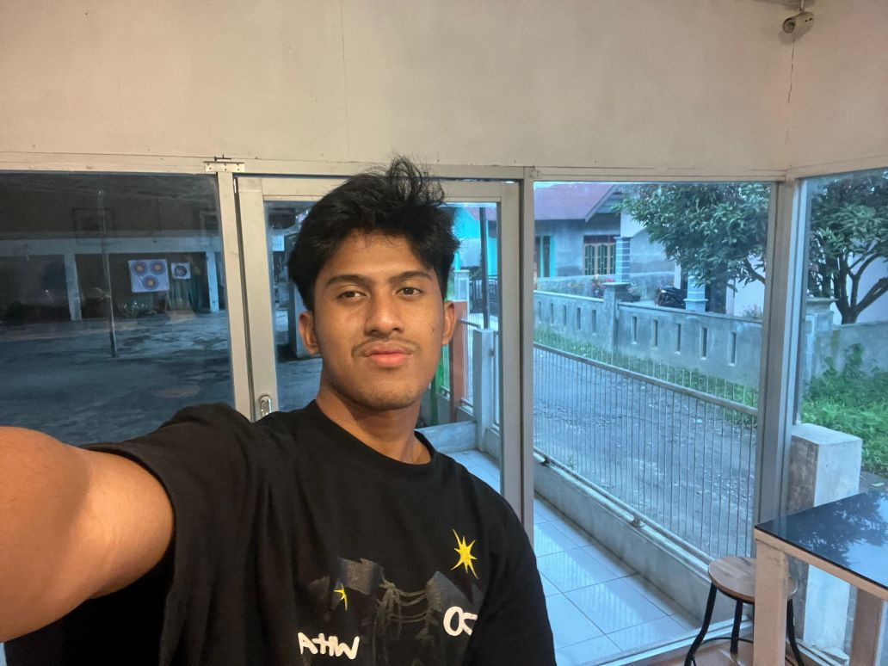
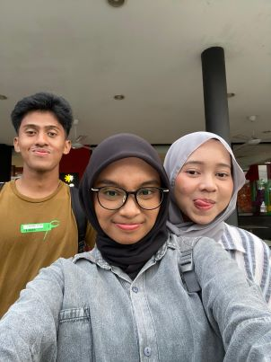
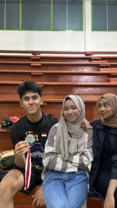
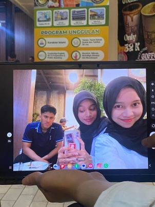
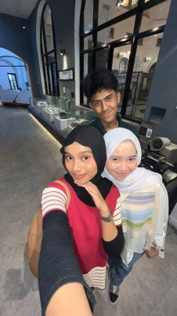
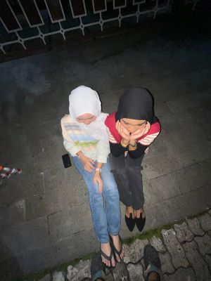

Glennia Nabila Mariska
hi, aku glen. suka hujan, suka laut, suka kucing, suka makanan manis, suka nonton film, suka jalanjalan. gasuka keramaian, gasuka pedas. aku punya kepekaan di atas rata-rata baik terhadap lingkungan, orang sekitar maupun diri sendiri. paham betul sama apa yg aku mau dan berpegang dengan prinsip. pande menyalurkan dan menyampaikan emosi dengan baik dan teratur. gabisa benci sama orang karna gaenakan, cenderung mentingin perasaan org ketimbang diri sendiri. punya perasaan sensitif, gampang nangis tapi ga di depan publik. sadar diri dan mau mengakui kesalahan. pinter nyembunyiin perasaan. suka nunda nunda pekerjaan, ngerjain sesuatu mepet deadline. tapi, ngerjain sesuatu pasti cepat. i am a fast learner. motto hidupnya santai, gak gampang stress. tumbuh di keluarga yang gapernah nuntut/ngasih pressure apa apa yang menyebabkan aku jadi terlalu lama berada di zona nyaman, dan sulit dapat motivasi untuk melakukan perubahan. sempat punya banyak citacita, tapi kalo boleh jujur jadi apoteker gapernah sekalipun terlintas, eh malah masuk farmasi wkwk. dari duluu (sd) udh mulai suka join organisasi. pengen banget jadi duta besar, kerja di hubungan internasional, karna sadar punya skill public speaking yang bagus. tp malah terjebak di farmasi yg kerjanya di laboratorium (salah jurusan) wkwk. suka ikut organisasi/kepanitiaan untuk mempertahankan skill public speaking. orangnya fleksibel, dan suka cobain hal hal baru. dari kecil selalu ikut banyak banget kegiatan, mulai dari olahraga, akademik, bela diri, musik, tari, public speaking, tp gada satupun yg benerbener dikuasai, wkwkwk makanya sampe sekarang bakatnya terbengkalai. punya kepercayaan diri yang stabil. lebih suka jadi pendengar tp bukan berarti gamau didengar. orang introvert yang butuh setidkanya 1 hari dalam seminggu untuk dihabiskan tanpa ngapa ngapain, just me myself and i. kata orang, aku punya hoki yang besar, karna cenderung terhindar dari hal hal yg orang sering khawatirkan. bisa dengan mudah ngebuat orang nyaman sama aku. punya hidung sensitif, ngebuat aku cukup tertarik dengan parfume, dan sangat mudah terganggu kalau ada bau ga enak. orangnya jijikan, terutama sama wc umum makanya hampir gapernah make wc umum. mandinya lama, besiapnya lama. at least aku butuh 1jam30menit (paling cepat) untuk bersiap sebelum pergi. and i really enjoy it. i really love taking time to take care of my self. sit in front of the mirror admiring my self wkwkwk. punya potensi tapi gapernah digunakan secara maksimal. kadang suka menghindar dari masalah, tp malah ujung ujungnya repot sendiri karna harus ngehadapi masalah yg dihindari dan akhirnya menumpuk. bisa tidur dimana aja posisi apa aja kondisi apa aja wkwk (kebo) kadang masik suka kepikiran untuk nyalahin org tua karna terlalu ngemanjain aku dari kecil, alhasil terlalu nyaman sama diri sendiri. it's okay, i am working on it. tahun ini aku udah plan untuk benerbener ngelakuin beberapa perubahan, demi keberlangsungan hidup aku. suka matematika, kalo boleh jujur itu pelajaran favorit. paling senang kalo ada orang yang ngingat hal hal kecil tentang aku. rada egois karna kalo lagi di keadaan yg down banget sekalipun, itu gamau cerita ke siapasiap. tp berharap ada yang cukup peka untuk sadar dan nanya duluan wkwkwk padahal mana bisa gitu kan ya, kalau mau ditolong ya harus minta tolong. last but not least, i love my self the most but also the biggest hater for myself
Desfira Azzahra Yasmine
hai,aku desfira,aku ngerasa cantik tapi aku ngerasa jlk jugak yah namanya manusia boy, apa ya keras kepala susah ngalah, keseringan ngikutin mood temen ngalah sm temen, panikan kadang kurasa aku bisa ngelakuin satu hal tapi kalo aku serius dan aku gamau kalah saing, aku cuma bisa di satu matkul/satu pelajaran doang susah untuk nguasai semua pelajaran, picky eater, mood swing aku gasuka kalo mau ketemuan atau janjian sm orang tapi dianya ga tepat waktu, kadang pelaku kadang korban. aku gasuka kalo misalnya aku terlalu dipaksa, aku harus ngikuti mood dan aku harus ngalah. aku gasuka sleepcall, aku gasuka dipaksa pap, aku gasuka orang bek tanyak sama ku ok aku suka dan sayang kali sama orang yang udh sebaik itu sm ku, ngertiin aku. aku suka kalo orang inget apa hal yang ga aku suka apalagi kalo dalam makanan yaaa, aku juga suka kalo orang inget hal kecil dari aku, aku ngerasa disayang kali sama dia kalo dia inget hal kecil dari aku AKU SUKA VC. kalo dalam memahami aku keknya kurang sih mungkin untuk memahami seseorang, tapi kecuali aku udh paham betul sm sifat dia itu aku bisa paham x siii
Rakha Ahmad Baihaqy
Haiii Aku Rakha Ahmad baihaqy Harahap.Aku sangat suka olahraga seperti basket,gym,badminton,dll.Aku juga orang yang paling ganteng di grub ini karena hanya aku sendiri cowo.Aku sangat suka makan ayam.Aku orangnya introvert tetapi saya bisa bergaul.Aku juga suka banget ngopi dan aku sering kali ngopi sambil nugas.Aku juga lagi single nih haha.
Sahabat
Yaps inilah kami yang biasa orang bilang 'SAHABAT'.Persahabatan atau pertemanan adalah istilah yang menggambarkan perilaku kerja sama dan saling mendukung antara dua atau lebih entitas sosial. Hal ini memusatkan perhatian pada pemahaman yang khas dalam hubungan antar pribadi. Dalam pengertian ini, istilah "persahabatan" menggambarkan suatu hubungan yang melibatkan pengetahuan, penghargaan, afeksi dan perasaan. Sahabat akan menyambut kehadiran sesamanya dan menunjukkan kesetiaan satu sama lain, sering kali hingga pada altruisme. selera mereka biasanya serupa dan mungkin saling bertemu, dan mereka menikmati kegiatan-kegiatan yang mereka sukai. Mereka juga akan terlibat dalam perilaku yang saling menolong, seperti tukar-menukar nasihat dan saling menolong dalam kesulitan. Sahabat adalah orang yang memperlihatkan perilaku yang berbalasan dan reflektif. Namun bagi banyak orang, persahabatan sering kali tidak lebih daripada kepercayaan bahwa seseorang atau sesuatu tidak akan merugikan atau menyakiti mereka. Nilai yang terdapat dalam persahabatan sering kali apa yang dihasilkan ketika seorang sahabat memperlihatkan secara konsisten: kecenderungan untuk menginginkan apa yang terbaik bagi satu sama lain. simpati dan empati. kejujuran, barangkali dalam keadaan-keadaan yang sulit bagi orang lain untuk mengucapkan kebenaran. saling pengertian. Sering kali ada anggapan bahwa sahabat sejati sanggup mengungkapkan perasaan-perasaan yang terdalam, yang mungkin tidak dapat diungkapkan, kecuali dalam keadaan-keadaan yang sangat sulit, ketika mereka datang untuk menolong. Dibandingkan dengan hubungan pribadi, persahabatan dianggap lebih dekat daripada sekadar kenalan, meskipun dalam persahabatan atau hubungan antar kenalan terdapat tingkat keintiman yang berbeda-beda. Bagi banyak orang, persahabatan dan hubungan antar kenalan terdapat dalam kontinum yang sama. Disiplin-disiplin utama yang mempelajari persahabatan adalah sosiologi, antropologi dan zoologi. Berbagai teori tentang persahabatan telah dikemukakan, di antaranya adalah psikologi sosial, teori pertukaran sosial, teori keadilan, dialektika relasional, dan tingkat keakraban.
Kebahagiaan
kebahagiaan adalah suatu keadaan pikiran atau perasaan kesenangan, ketentraman hidup secara lahir dan batin.
    